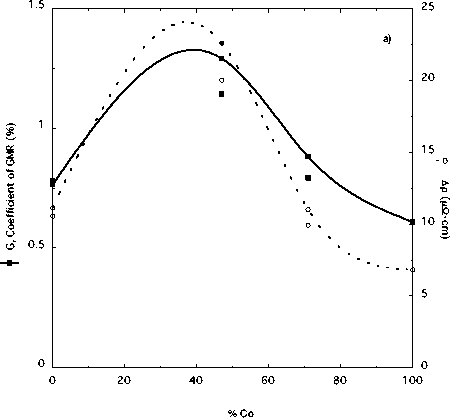
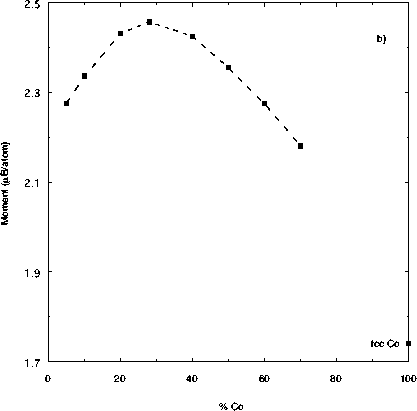

Figure 6: a) Giant magnetoresistance
coefficientG and field-induced change in resistance Dr and b)
magnetic moment data vs. alloy composition. The magnetic
moment data is from Ref. 30. G is the angle-independent,
intrinsic measure of magnetoresistance magnitude in a
ferromagnet/paramagnet/ferromagnet sandwich. The dashed lines
in both these plots are guides to the eye, not fits.